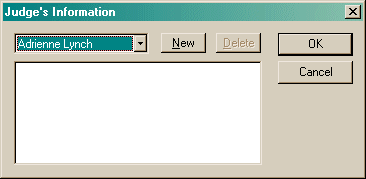

The Information dialog allows you to record information about any club, judge or location.

All clubs, judges or locations that you have currently entered in trials or runs will be listed. In addition, you can create an entry, using the New button, for any club, judge or location that you have not yet used. You can only delete entries that are not currently in use.
The Visible in lists option allows you to hide an item from being shown in a selection list. This is useful if you have existing data, but no longer wish to see that item. For instance, a trial location will never be used again because it was sold.